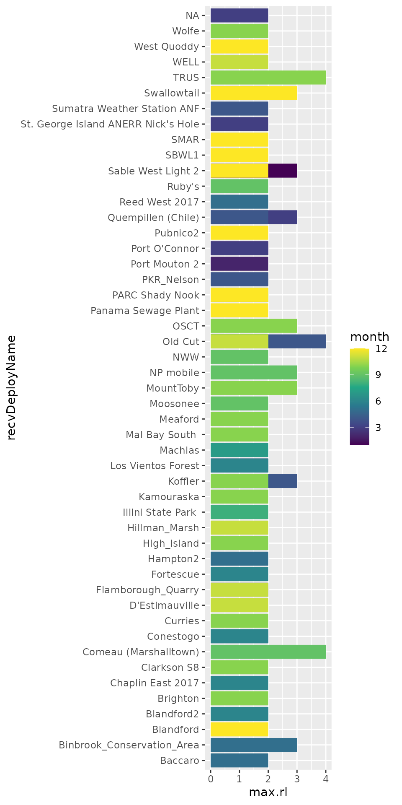

Invariably you will run into some false detections in your tag detection data. Sometimes these may be due to random glitches or noisy radio conditions. The various outputs on the Motus web site are pre-filtered, but data downloaded via the motus R package provides access to all detections, allowing users more control over which detections to keep or omit.
Therefore, it is important to filter these out as part of your data cleaning process. Chapter 5 - Data cleaning is a good place to start for a walk-through), and in this article we’ll cover in more detail two methods of filtering out dubious hits based on radio noise (activity) and run lengths.
Background
library(motus)
library(tidyverse)
library(lubridate)
tags <- tagme(176, update = TRUE, new = FALSE, dir = "./data")As runs are composed of sequences of hits, the longer the run the more confident we can be that it represents a true detection.
Run lengths are runLen in the alltags view.
## # Source: lazy query [?? x 5]
## # Database: sqlite 3.37.0
## # [/home/runner/work/motus/motus/vignettes/articles/data/project-176.motus]
## hitID runID batchID motusTagID runLen
## <int> <int> <int> <int> <int>
## 1 45107 8886 53 16047 5
## 2 45108 8886 53 16047 5
## 3 45109 8886 53 16047 5
## 4 45110 8886 53 16047 5
## 5 45111 8886 53 16047 5
## 6 199885 23305 64 16047 11
## 7 199886 23305 64 16047 11
## 8 199887 23305 64 16047 11
## 9 199888 23305 64 16047 11
## 10 199889 23305 64 16047 11
## # … with more rowsHowever, local conditions at an individual receiver may vary in their exposure to background radio noise/interference. Sites with relatively more background noise may be more prone to generating a high number of very short runs that are in reality spurious data.
The activity table contains information on the number of runs (numRuns) and how many of these runs were particularly short (i.e. 2 hits run2 or 3 hits run3, etc.)
tbl(tags, "activity") %>%
select(batchID, motusDeviceID, ant, year, month, day, hourBin, numRuns, run2, run3)## # Source: lazy query [?? x 10]
## # Database: sqlite 3.37.0
## # [/home/runner/work/motus/motus/vignettes/articles/data/project-176.motus]
## batchID motusDeviceID ant year month day hourBin numRuns run2 run3
## <int> <int> <chr> <int> <int> <int> <int> <int> <int> <int>
## 1 53 486 1 2015 9 25 400872 1 0 0
## 2 53 486 1 2015 9 30 401014 1 0 0
## 3 53 486 1 2015 10 8 401204 1 0 0
## 4 53 486 -1 2015 9 30 401014 1 1 0
## 5 53 486 -1 2015 10 8 401204 1 0 0
## 6 53 486 2 2015 9 30 401012 1 0 1
## 7 53 486 2 2015 9 30 401014 1 1 0
## 8 53 486 2 2015 10 8 401204 1 0 0
## 9 53 486 3 2015 9 21 400796 1 1 0
## 10 53 486 3 2015 9 25 400872 1 0 1
## # … with more rowsTherefore a good first pass filter should use both the length of a run and the amount of radio activity (number of short runs) at a given site to determine whether or not to remove a run of hits.
Empirically-based cutoffs
Based on these ideas and through empirical examination of data, the Motus team have determined a set of specific cutoffs that work well as a default filter.
In general, short runs (with a length of only 2 or 3) have a relatively high probability of being false positive detections. In contrast, long runs (with a length of 5 or more) have a high probability of being true positives. Therefore, runs with a length 3 or less are conservatively considered invalid, and runs with a length of 5 or more are considered valid.
At noisy sites, there is a greater chance of having spurious detections. Therefore, intermediate runs (with a length of 4), are considered valid at quiet sites, but likely invalid at noisy sites. Noisy sites are categorized as those with many runs (>= 100) and a high ratio of runs with lengths of 2 at a given time (>= 85%).
Filtering in motus
There are two filtering options in the motus R package that follow these ideas:
- Easiest is the field/column called
motusFilterfound in therunstable 1 - More customizable, is the function called
filterByActivity()
motusFilter
The column/field motusFilter in the runs table is a filter value created on the server that reflects
- Empirically-based cutoffs defined above
- Some manual filtering based on aliasing or out-of-range records 2
This is a good first option for identifying detections that have a higher probability of being false. Currently the motusFilter contains just two values 0 or 1. Runs with a motusFilter of 0 are considered “invalid” (i.e. have a low probability of being true detections) and could therefore be omitted.
tbl(tags, "runs")## # Source: table<runs> [?? x 10]
## # Database: sqlite 3.37.0
## # [/home/runner/work/motus/motus/vignettes/articles/data/project-176.motus]
## runID batchIDbegin tsBegin tsEnd done motusTagID ant len nodeNum motusFilter
## <int> <int> <dbl> <dbl> <int> <int> <chr> <int> <chr> <int>
## 1 8886 53 1445858390. 1.45e9 1 16047 3 5 NA 1
## 2 23305 64 1445857924. 1.45e9 1 16047 1 11 NA 1
## 3 23306 64 1445858341. 1.45e9 1 16047 3 6 NA 1
## 4 23307 64 1445858497. 1.45e9 1 16047 2 5 NA 1
## 5 23308 64 1445858826. 1.45e9 1 16047 2 5 NA 1
## 6 104118 141 1445858904. 1.45e9 1 16047 2 3 NA 0
## 7 104119 141 1445858875. 1.45e9 1 16047 3 3 NA 0
## 8 104120 141 1445858933. 1.45e9 1 16047 -1 2 NA 0
## 9 104131 97 1445855802. 1.45e9 1 16047 2 4 NA 1
## 10 104132 97 1445855812. 1.45e9 1 16047 3 5 NA 1
## # … with more rowsTo omit runs identified as dubious by motusFilter we can use an anti_join() from the dplyr package.
First identify invalid runs with a motusFilter of 0
Now use anti_join() to remove those runs from the alltags view
To double check we can filter for short runs in the original alltags view
## # Source: lazy query [?? x 5]
## # Database: sqlite 3.37.0
## # [/home/runner/work/motus/motus/vignettes/articles/data/project-176.motus]
## hitID runID batchID motusTagID runLen
## <int> <int> <int> <int> <int>
## 1 516095 104118 141 16047 3
## 2 516096 104118 141 16047 3
## 3 516097 104119 141 16047 3
## 4 516098 104119 141 16047 3
## 5 516099 104118 141 16047 3
## 6 516100 104119 141 16047 3
## 7 516101 104120 141 16047 2
## 8 516102 104120 141 16047 2
## 9 516132 104133 97 16047 2
## 10 516133 104133 97 16047 2
## # … with more rowsAnd compare this to our newly created alltags_filtered table
## # Source: lazy query [?? x 5]
## # Database: sqlite 3.37.0
## # [/home/runner/work/motus/motus/vignettes/articles/data/project-176.motus]
## # … with 5 variables: hitID <int>, runID <int>, batchID <int>, motusTagID <lgl>,
## # runLen <int>No more short runs, good!
filterByActivity()
The motusFilter is one method of determining false detections, but Motus users are encouraged to explore alternative filter parameters.
By default, filterByActivity() filters detections using the specific cutoffs defined above in Empirically-based cutoffs. However, users can fine-tune the filter by adjusting all these cutoffs.
To get the same results as our above example with motusFilter, we can use filterByActivity() with the default arguments and only return good runs.
alltags_filtered2 <- filterByActivity(tags, return = "good")Note that filterByActivity() requires the SQLite database connection (not a flat data frame).
If we compare hits, runs, and batches, we see that the two filtered data sets are identical (although this won’t always be the case3).
test1 <- alltags_filtered %>%
select(hitID, runID, batchID) %>%
collect()
test2 <- alltags_filtered2 %>%
select(hitID, runID, batchID) %>%
collect()
waldo::compare(test1, test2)## ✔ No differencesAlternatively we can change the default view used, so the filterByActivity() function uses the alltagsGPS view. However, on very large databases this could be slow.
alltags_filterd3 <- filterByActivity(tags, return = "all", view = "alltagsGPS")Customizing the filterByActivity()
The filterByActivity() function uses the activity table to identify potentially problematic runs. As above, you can return just the “true” positives (return = "good"), but you can also return just the “false” positives (return = "bad") or all runs (return = "all"). If you return all runs, you will also get a new column, probability, which reflects either 0 (expected false positive) or 1 (expected true positive), similar to the motusFilter column.
For example, the following code adds a probability column to the sample project data.
alltags_filtered4 <- filterByActivity(tags, return = "all") %>%
select(hitID, runID, batchID, motusTagID, runLen, probability)
alltags_filtered4## # Source: lazy query [?? x 6]
## # Database: sqlite 3.37.0
## # [/home/runner/work/motus/motus/vignettes/articles/data/project-176.motus]
## hitID runID batchID motusTagID runLen probability
## <int> <int> <int> <int> <int> <dbl>
## 1 45107 8886 53 16047 5 1
## 2 45108 8886 53 16047 5 1
## 3 45109 8886 53 16047 5 1
## 4 45110 8886 53 16047 5 1
## 5 45111 8886 53 16047 5 1
## 6 199885 23305 64 16047 11 1
## 7 199886 23305 64 16047 11 1
## 8 199887 23305 64 16047 11 1
## 9 199888 23305 64 16047 11 1
## 10 199889 23305 64 16047 11 1
## # … with more rowsYou can adjust these parameters to be less strict (i.e., exclude fewer detections). For example, here we exclude all runs of length 2 or less (minLen), keep all runs of length 4 or more (maxLen), and will exclude any runs less than length 3 (2 < run < 4) from an hour which had more than 500 runs (maxRuns) and where at least 95% (ratio) of those runs have a run length of 2.
relaxed <- filterByActivity(tags, minLen = 2, maxLen = 4,
maxRuns = 500, ratio = 0.95,
return = "all")These parameters can also be more strict (i.e., exclude more detections). This next example excludes all runs of length 4 or less (minLen), keeps all runs of length 10 or more (maxLen), and will exclude any runs of length 5-9 (4 < run < 10) from hours which have more than 50 runs (maxRuns) and where at least 75% (ratio) of those runs have a run length of 2.
strict <- filterByActivity(tags, minLen = 4, maxLen = 10,
maxRuns = 50, ratio = 0.75,
return = "all")Note that the filters may exclude some true detections in the process. Therefore, we recommend that after a full analysis of your data, you return to these detections and examine them individually, to determine (usually contextually) if they can be considered valid.
Exploring problematic detections
You may also be interested more generally in exploring which data have only short run lengths. For example, the following code shows the maximum run length at all sites by month (for those runs which haven’t been removed by filtering).
Here we will collect and summarize by receiver and month maximum run lengths. We’ll convert ts to a datetime format with as_datetime() from the lubridate package and we’ll use the month() function to pull out months.
max_runlen <- tbl(tags, "alltags") %>%
collect() %>%
mutate(ts = as_datetime(ts, tz = "UTC"), # convert ts to POSIXct format
month = month(ts)) %>%
group_by(recvDeployName, month) %>%
summarize(max.rl = max(runLen))## `summarise()` has grouped output by 'recvDeployName'. You can override using the `.groups` argument.
ggplot(max_runlen, aes(x = recvDeployName, y = max.rl, fill = month)) +
geom_col(position = "dodge") +
scale_fill_viridis_c() +
coord_flip()Alternatively, you can produce a list of sites where the maximum run length of detections was never greater than (say) 4, which may sometimes (but not always!) indicate they are simply false detections.
ggplot(filter(max_runlen, max.rl < 5),
aes(x = recvDeployName, y = max.rl, fill = month)) +
geom_col(position = "dodge") +
scale_fill_viridis_c() +
coord_flip()
It is impossible to go through every possible issue that you may encounter here. Users are strongly encouraged to explore their data fully, and make reasoned decisions on which detections are unlikely or indeterminate.